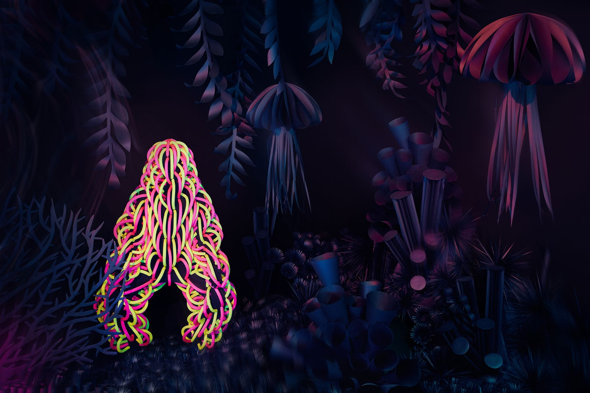
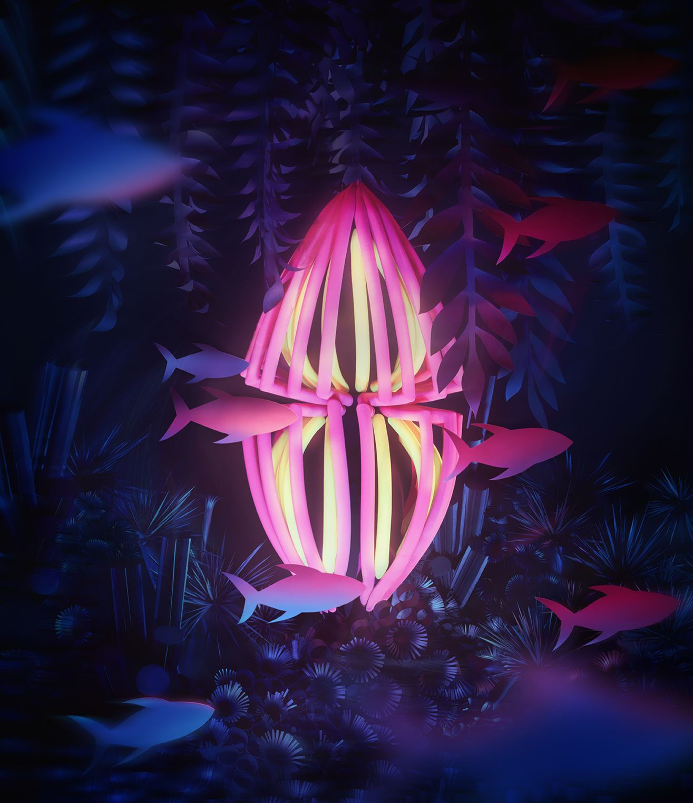
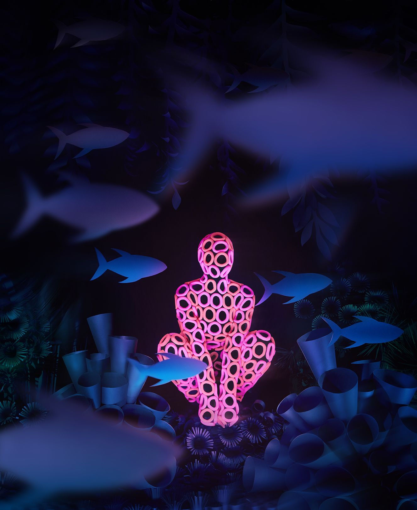

My most painstaking project, and all of it made by hand.
Strange deep-sea creatures that light up the dark ocean around them: sculptural costumes by Roman Ermakov, a seabed by Venera Kazarova built entirely from black paper, retouching by Alex Tikhonov. Three months of preparation, four days of shooting, a year of post-production. Shown at the ZDES na Taganke Gallery in Moscow and in group shows. Featured in Creative Boom, Trend Hunter and Fubiz; the most viewed project on my Behance.


Everything here was built for real and shot on camera.
Discuss a project →Working worldwide, remotely. Invoicing in USD or EUR.